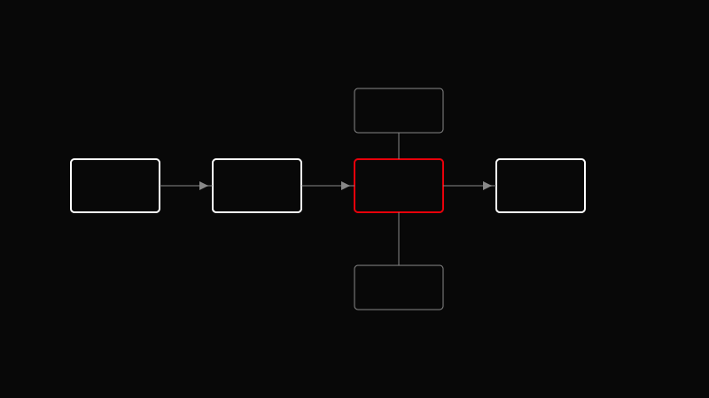

AVA CREATORS TOOLKIT · COLOR GRADING
NODE STRUCTURE
Serial, Parallel, Layer
Serial, Parallel, Layer

Layer nodes combine passes. Build prep → look → skin → background so changes stay isolated.
Input transform and exposure normalize.
Spatial NR and exposure zones if needed.
Creative look node.
Dedicated skin and background nodes.
Export node stills for match reference on long projects.
One giant node that does everything.